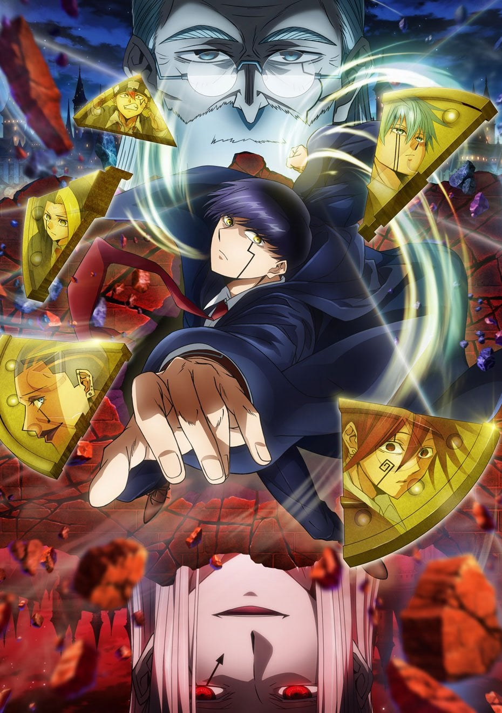

Season 1 (2023)
Mash enrolls at Easton Magic Academy and uses raw physical strength to disguise as a mage, competing in the Divine Visionary selection exams.

Season 2: Divine Visionary Magic Academy Arc (2024)
Now a Divine Visionary candidate, Mash faces stronger rivals and uncovers a conspiracy tied to the Church's hidden agenda.